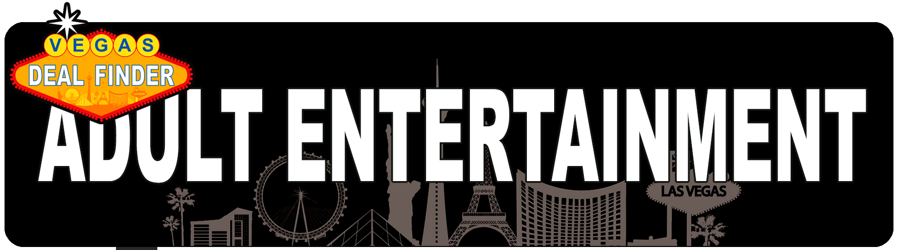

<template>
  <div class="MainContainer">
    <div class="TitleImg center">
      
    </div>

    <h2>List of Recreational Weed Dispensaries near the Las Vegas Strip </h2>

    <div class="flex center col">
      <h4><a href="https://www.planet13lasvegas.com/">PLANET 13 LAS VEGAS </a></h4>
      <p>Off the Strip, Nobody does the Vegas dispensary experience better than Planet 13, a place that's sort of a cross between a Vegas nightclub and Vegas dispensary.  Like all the very best places in Vegas, this place is designed to entertain you as much as sell you things. And much like the strip clubs located nearby, Planet 13 also offers a free shuttle from select locations. (And it’s open 24/7!) They also feature exclusive products and launches and have a text rewards program,  and special overnight deals available midnight-8am. </p>
      <h4><a href="https://reefdispensaries.com/locations/las-vegas/">REEF DISPENSARIES</a></h4>
      <p>Off the StripReef Dispensaries has several locations throughout Nevada, but their flagship store is the one near the Strip (and next to Planet 13, as luck has it), which kind of looks like an ultralounge-meets-Apple store (actually, most dispensaries look like this).  </p>
      <h4><a href="https://thesourcenv.com/">THE+SOURCE </a></h4>
      <p>Henderson and Westside are the two locations in the Las Vegas Valley, The+Source offers more than 30 different strains of cannabis and a variety of concentrates, edibles, and more. They're also known for their top-notch customer service, "higher education" informative seminars, and great customer rewards program.  </p>
      <h4><a href="https://essencevegas.com/">ESSENCE CANNABIS DISPENSARIES </a></h4>
      <p>Near Sahara, Henderson, Tropicana WestEssence has three locations around Las Vegas, and is the only dispensary to have a location that's actually on the Strip. Do keep in mind, though, it's waaaaay North Strip across from the Strat. Inside, the multiple-award-winning stores are super-sleek, and they offer a wide selection of products including over 50 strains of flower and pre-rolls, edibles (cookies, chocolates, gummies, infused-drinks), vape pens, concentrates, and topicals. Check out their daily deals and discounts calendar and sign up for text alerts to save some green.  </p>
      <h4><a href="https://www.lasvegasreleaf.com/">LAS VEGAS RELEAF DISPENSARY </a></h4>
      <p>Near Sahara casino Las VegasClose to the Strip and the Las Vegas Convention Center, ReLeaf shirks the stylish tech showroom look popular with most dispensaries for more of a trendy lounge/bar feel, and they proudly proclaim to have the world's first and only "tasting bar" inside a dispensary.  ReLeaf has some of the best prices and deals you're going to find in Vegas, especiallythis close to the Strip.   </p>
      <h4><a href="https://medmen.com/">MEDMEN</a></h4>
      <p>Off the Strip, Arts DistrictMedMen has two locations in Las Vegas, one near the Strip and the other in the Downtown Las Vegas Arts District. The location on Harmon (across from the soon-to-be Virgin Hotels Las Vegas) is open 24 hours, while the Arts District location is one of the only dispensaries downtown.  If you're looking to get into some downtown shenanigans (and you really should be), this is your best bet.  </p>
      <h4><a href="https://www.theapothecaryshoppe.com/">THE APOTHECARY SHOPPE </a></h4>
      <p>Across from the Palms Casino, this olde world-y upscale dispensary -- you can tell it's olde world-y and upscale because of the extra "pe" at the end of "Shop," and also because it looks like the retail side of a fancy cigar lounge -- is especially known for its gourmet edible confections made by an executive pastry chef with over a decade of experience in some of the most renowned restaurants on the Strip.  Check out their daily deals on the website. </p>
      <h4><a href="https://apothecarium.com/las-vegas">THE APOTHECARIUM </a></h4>
      <p>WestsideWith chandeliers hanging overhead, the Apothecarium looks more like a fancy hotel lobby than a dispensary, which is fitting since it's located out in the fancy western suburbs of Las Vegas. They've got your flowers, topicals, concentrates, and all kinds of edible treats, and they also host a number of in-store events including visits from growers, member support groups, and educational classes.  </p>
      <h4><a href="https://jardinlasvegas.com/">JARDIN</a></h4>
      <p>EastsideIf Planet 13 embodies the over-the-top entertainment side of the Las Vegas dispensary, Jardin embraces the image-conscious side of Vegas. If you want the full Vegas experience of feeling like you're living in a music video, this is for you. If you care more about the products cultivated rather than the image cultivated, this is probably not your spot. Also note that "Jardin" is also the name of a restaurant inside the Encore, before you start lazily GPSing. </p>
      <h4><a href="https://thegrovenv.com/">THE GROVE</a></h4>
      <p>Near McCarran International AirportWelcome to Las Vegas! Now go get you some weed. The Grove is right by the airport, making it a convenient first stop for all you weekend warriors, plus it's open 24 hours daily!   </p>
      <h4><a href="https://oasiscannabis.com/">OASIS CANNABIS </a></h4>
      <p>Stripper Row - Oasis is your friendly neighborhood dispensary. Much like most of the other spots, they've got a sleek showroom and a nice selection, they're located on Stripper Row, and they're open 24/7. But they've also got a great rewards program and daily deals, better prices than most of their competitors, and excellent edibles. </p>
      <h4><a href="https://thedispensarynv.com/">THE DISPENSARY</a></h4>
      <p>Southwest, Henderson- The Dispensary is a locals' joint for local joints. They’ve got some of the lowest prices with a ton of great specials on top of it. There are two locations in the Las Vegas area and while these are certainly smaller stores than some of the flashier competition, they're able to focus all the more on their customer service. If you care more about quality service and good prices than curb appeal, check this place out. </p>
      <h4><a href="https://acrescannabis.com/">ACRES CANNABIS </a></h4>
      <p>15 minute walk from Palace StationAcres Cannabis is Vegas's farm-to-bong cultivator and dispensary. Their cultivation operation spans over 37 acres in the Mojave Desert and produces more than 60 strains of cannabis throughout the year. With their own 2,000-square-foot "cannabis kitchen" with an open view to customers, you can actually watch them make gourmet chocolates and pastries including cookies, donuts, chocolate-covered popcorn and pretzels, brownies, and candies fresh daily, and also watch their cannabis extraction operations. And every Friday and Saturday from 11pm to 7am, Acres presents The Underground: Marijuana Farmers Market, allowing small growers and producers a space to share their creations direct with their customers. It's a farmer's market for pot.  </p>
    </div>

  </div>
</template>
